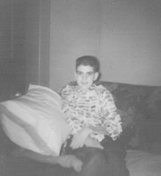
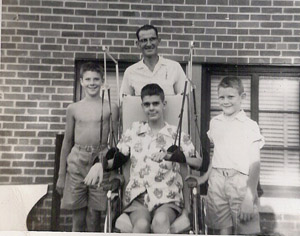
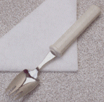
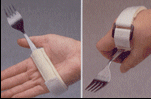
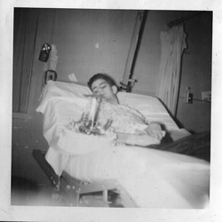

Let's Go to Omaha
Gradually as the days and weeks rolled by in the hospital, certain things were becoming very clear to me. First, I wasnt going to have to worry about my dishwashing bet that I made with Donna back in August. Playing basketball again was not in my future life plans. Next, it was obvious that I was severely paralyzed to the point that my whole world was going to be different from now on. If I were to improve physically at all, we were going to have to seek another institution with more experience with polio. My therapist could only do so much stretching of my muscles in the Hubbard tank, and the standing bed was likewise a minor treatment. So the doctors and my parents began consulting. The solution arrived at meant going to Omaha, Nebraska. There was a hospital there -- St. Josephs that had a large polio ward with more specialized personnel. The principal advantage that it had was an occupational therapy department. There you would receive help in learning to use your hands for writing and feeding yourself. The downside to this decision was that it took me a long distance to the east of my home. But serious situations often mean great measures must be taken. So near the end of January 1956, after near five months in St. Anthonys hospital in Hays, I took another ambulance ride to another hospital.The environment in St. Josephs was in marked contrast to St. Anthonys. Here there was room after room of patients using rocking beds, and some even using the iron lungs as well. Lots of them were teenagers just like me, both boys and girls. I was first placed in a single room, later to be transferred to a 6-bed ward, containing four boys and two men. During the initial days, they did some tests on me. One important test they called a K-U-B, which stands for Kidney-Urethra-Bladder. The x-ray found that I had stones in my bladder that would need to be removed. Upon further investigation of my diet back in Hays, I told them that I had been allowed to drink lots of milk two half-pint cartons for each of my lunch and supper meals and one for breakfast. Now milk contains lots of calcium, right? And I had to urinate while lying flat, right? Hence, not all the urine with little molecules of calcium in it could be eliminated from the bladder, right? So it doesnt require the use of mathematical calculus to conclude that I had calculi, (the medical name for stones) in my bladder. But the surgery wasnt necessary immediately; we could do it whenever the time was appropriate. Whew!
One of my first memories of this place has nothing to do with medical matters however, but with an excursion outside of the hospital. It seems that in February the famous skating show, The Ice Capades , was in town. Several patients, mostly young kids like me, were invited to go see it. So I decided to try it.
My breathing strength by now had increased so that time was not a big concern as long as I was lying in bed. What I had not factored into the equation was how well I could do it sitting up in a wheelchair. That, as the saying goes, is another kettle of fish. The show was spectacular, of course, what I saw of it anyway. Soon my body gave way, and it wasn't all that much fun. I had to ask the helpers to remove me from the audience area. Another good lesson learned.
There was another excursion that was definitely more pleasant that took place somewhat later, around Easter time. The hospital had a special volunteer project to benefit the patients who couldn't feed themselves. So they encouraged people from the outside to come to give of their free time during the mid-day and evening meals to help with this task. And that's how I met Dee .
Her name was Dee Dostel, a young, married lady in her early 20's, maybe late teens. She worked as a dental assistant and lived at home with her parents while her husband was stationed in the Army in Germany . And oh, did I mention she was pretty? Well, she was. Very pretty. Somehow one day as she started her volunteering, she chose my food tray from the cart and brought it to me, thus starting off a beautiful friendship. Hospital food never tasted so good as when Dee was feeding me. My ward mates liked to tease me after Dee left to go home. Really they only wished that they were as lucky as I was.
It turns out that Easter Sunday was just around the corner. Dee approached the hospital authorities to request permission to give me a day out of the hospital by taking me to her parents' home for dinner. Permission was granted, so off I went. The picture at the right shows me sitting on the living room sofa. It was surely a great way to spend a day.  As was mentioned above, receiving occupational therapy was one of the prime goals for the transfer to Omaha . Within that goal were two secondary goals learning to write again and learning to feed myself. Learning to write was the first one we focused on, mainly due to what my step-mother, Donna, had been doing with me for many months before back in Hays. She had observed that my left arm seemed to have a flicker of muscular movement in it. Remember, it was the last limb that I could move in the Quinter hospital. She also figured out that the rocking motion of the bed could be used to our advantage. I often lay on my left side with my arm stuck somewhat out to the side. As the bed rocked up and down, my arm could be gently bent at the elbow in rhythm. So she began her own little therapy program during her visits on weekends. She would stand beside me and move the arm, encouraging me to flex my biceps muscles as much as I could. Gradually, with the help of the bed's motion, I could make some progress on my own. My right arm was not so lucky.
The therapists in Omaha started me out by fitting my wheelchair with arm slings. The photograph shows what they looked like when my arms were placed in them. Next the therapists would push me up to a table or place a table on top of my wheelchair's armrests. They would then fasten a paint brush to my hand in anyway possible and encourage me to move my arm as much as I could. My goal was to make controlled strokes, not wild ones. Thanks to Donna's fine efforts earlier, I managed to do so. I've often referred to that arm as my Donna arm. Without it, my life would have been much more difficult.
 We next turned to the matter of eating by myself. This was somewhat more complicated. The instrument that I used initially was a combination of a spoon and fork and had a plastic handle to make the gripping easier. (See illustrations below for a rough idea.) My four smaller fingers had recovered some activity that allowed me to actually hold it. The plate was fitted with device that would keep food from going off onto the table. Combining a swinging motion with my arm in the sling, I aimed the spork at the food on the plate much as Japanese kamikaze pilot might have honed in on an American aircraft carrier during WWII. Sometimes the results were just as messy, too. Eventually, things improved to the point that more went inside than stayed outside.
  My high and low point regarding this skill occurred on the same day. My family couldn't come to see me as frequently as my time in Hays, of course. So whenever they could make the long trip from western Kansas to eastern Nebraska , I wanted things to be worth the trouble. Showing off for them how much I had progressed in writing and feeding seemed like a worthy thing. The day that they came we all went to the occupational therapy room. My arms were placed in the slings, the spork was put in my hand, and the plate of food was set before me. Then disaster struck. Nothing went right. First I couldn't get the food on the spork each time that I aimed for it. And when I did achieve that, I tried to put it in my mouth. But the food just fell off, falling all over the floor. Okay, I admit it. I cried. After weeks spent trying to learn something as basic as this and wanting to demonstrate my progress to my parents, only to have it turn out this way. It just wasn't fair.
Some twenty years later I saw a movie that caused me to re-live that event. The movie, The Other Side of the Mountain , told the real-life story of Jill Kinmont, who suffered a skiing accident in 1955 (the same year I got polio) while training for the Olympics. One day her boyfriend came to visit her in the hospital where she had been undergoing therapy. Apparently, they had different expectations. He must have expected her to jump out of her wheelchair and embrace him. She, on the other hand, merely wished to demonstrate that she had begun to learn to feed herself, by putting some popcorn into her mouth. She was obviously nervous, and dropped the popcorn bowl, spilling everything. The boyfriend was shocked. As he didn't quite know what to make of it, he made a hasty exit and was never to be seen in the story. Jill was left in her sorrow, her heart broken. Though the roles of the participants were different in our respective scenarios, each of us must appreciate how we felt on those days. Lucky for both of us, we didn't let this event stop us in our quest for recovery.
* *** *
Recall those bladder stones mentioned earlier? Well, the occasion for the surgery to remove them was preceded and followed by two unique events. The first event possibly occurs with some frequency around the world, the other has probably never occurred in the history of medicine, except for my case. Here's how it all transpired.
One day when I felt the need to urinate, I called for someone to bring me a urinal. After it was placed between my legs, I tried to go, but was having an unusual degree of difficulty. It just wouldn't go. In fact, I felt a little blockage in my plumbing. Then, all of a sudden, I felt it release rapidly, to be followed by a definite plink! inside the metal urinal. I think you know what happened, don't you? Sure enough, one of the smaller stones passed right on through. Hmm. When the nurse returned and confirmed it, my buddies in the ward had a lot of fun teasing me, saying Terry, you just had a baby! I was fortunate not to have suffered any labor pains or other features that accompany a woman's pregnancy normally.
There were still more stones left, and larger ones, too. This prompted the doctors to arrange for my surgery rather soon. The operation was not difficult, of course, but the post-op recovery was certainly different. Just to be on the safe side, I was placed in an iron lung for about 24 hours, the first time I had been in one since early September the year before. After taking me out of the iron lung, they thought I would still need a little more breathing assistance than my rocking bed could provide. So they tried something called a chest shell respirator. It consists of a vinyl plastic shell that very much resembles the upper shell of a tortoise. This shell is placed on the patient's chest and a seal is obtained so that air can't escape. It is connected to a respirator pump by a large tube which provides the positive-negative air pressure in the space between the shell and patient's body. Objective? To give the patient greater freedom of movement in bed, but also allowing him or her to move about in a wheelchair. (See picture for an example of a person using a chest shell.) The downside of this device is that it is uncomfortable at first, and one needs some time to get accustomed to it gradually. Time that I didn't have or need. Add to that the fact that I've just had an operation in an area of my abdomen where the lowest point of the shell touches my body. Ouch, and double ouch!
Thank goodness they didn't leave the shell on much longer either, returning me promptly to my good ol' rockin' bed. Things were finally looking up again until one morning an orderly brought a gurney to our ward to pick up one of my friends for his therapy treatment. In order to reach his bed, the orderly had to maneuver the gurney around the foot of my bed, making a left turn as in city traffic. As he started his move, my bed was just finishing its upward cycle. Before he could react properly, my bed began its downward motion. The foot of the bed struck the gurney and went no further. But the bed's motor system doesn't know that and continues its normal function. Result? My bed rolled over on its side! In the space of a couple of seconds, I found myself on the hospital floor again. Unlike the event in Hays months before, this time I was lying on my right side and the bed flipped over to the left. Also the mattress slid off the bed and stayed under me. Actually, in retrospect it was sort of fun. My only concern at the instant was the urinary catheter that was hanging over the right side, fastened to the bedsheet. If that were to pull out as I slid from the mattress well, nuf said about that.
* *** *
 About this time the month of May was coming upon us. And that meant something special to me my birthday! But this time I would have to celebrate it without family being around me. Here is a picture, taken of me in my rocking bed. I dont know who prepared the cake that Im looking at, but I'm sure it was delicious. As alluded to above, I met many other victims of polio during my stay in Omaha , most of them young people like myself. But three adult men left some particular effects on me that deserve mention here. One of them was a lawyer, aged 40-50 as I recall. He was completely dependent on an iron lung. Another was a school teacher in his 30's, married with two small children. He used a chest shell and the rocking bed for his breathing assistance. The third individual, who I'll call Bob here, came to the hospital for surgery on his hands. Now in his late 20's or early 30's, Bob was struck by polio as a young boy when treatment wasn't as good as it was at this time.
I have often reflected back on whatever might have happened to them in their lives. I envisioned the lawyer as likely to have continued with his profession, as it is usually perceived as principally a mental activity. Industrial Arts was the specialty of the school teacher, so like my father, needed the use of his hands. One could only imagine what must have been going through his mind as he was contemplating his future, while his family was standing beside his bed. Hands that lay motionless at his side could never grasp a hammer again. It was his case that the public should be more aware of, not the cute little children walking around with crutches and leg braces. But it was the latter that was normally featured on the March of Dimes propaganda in the media. The child could at least walk, had the use of his hands and arms, and could adapt his/her future accordingly. The husband-father-school teacher faced greater challenges and needed more help to reshape his life.
Bob's effect on me was more direct and personal. From him, I learned to accept things as they were and not to have unrealistic dreams for the future, especially regarding my physical abilities. I sensed from things that my father had said that he was hoping for a great recovery, that I might be walking across the stage at my graduation in order to receive my high school diploma. But in our conversations, Bob left me with the idea that eventually one must accept one's physical status as it was, that it wasn't going to change drastically over time, and that one must get on with the business of living. Doing the best with what one possessed was more important and productive than having pie in the sky dreams that probably couldn't be realized in a reasonable amount of time. Rightly or wrongly, I believe Bob had the right idea. After all he had walked the walk, therefore had the right to talk the talk.
With the summer vacation coming up soon, my family decided to spend it with me in sunny Omaha . Dad got a part-time job working at the hospital, in the laundry department. This way he could be closer to me and observe what was going on regarding my therapy. Donna enrolled in a local college to continue collecting university credits towards her bachelor's degree. What my brothers did during this time, I don't recall. It couldn't have been much fun for them to be taken away from a place where they had friends, then to live in a strange city. When one member of a family is affected by a serious paralyzing disease like polio, everyone is affected in some way or another. That's just the way life goes.
It was certainly a good thing that my parents had come. They noticed something very important regarding my physical condition. My back had begun to develop a definite curve that was very evident when I was sitting up in a wheelchair. This made breathing and doing things with my left hand and arm more difficult. So they began pressuring the doctors to do something about that. The result was a back brace consisting of straps and buckles, canvas panels, and a metal framework covered in leather. Later I was to learn from other orthopedic experts that this brace was quite old fashioned and inadequate for my body's needs. But when you don't know, anything is better than nothing.
Soon the middle of August was upon us, meaning our family must be moving back to Kansas . I had now spent virtually 50 weeks in a hospital. School, new friends and adventures awaited me.
To be continued...
| Comments? Send e-mail. |
Back to top |
Go back to Contents |